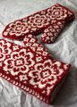

|
||
Premium Patterns Wintry Mix Mitts Love Bytes HawkeyeFree Patterns Kiddie Cadet Summerlin Ruffled Scarf Seamless DS Sock Simply Seamless Pouch Myriads of MushroomsExtras DIY Mitten Blocker Felt Patch Tutorial Yarn Dyeing Tutorial Needle Pouches Knitting Journal |
December 11, 2009 - Posted by Alice SchneblyWinter Showers bring May FlowersProject Specs I've loved these mittens ever since I first saw them on Ravelry, so when I was looking for a fun pattern to knit for Christmas I immediately thought of these. The flower motif is really well done and the whole pattern has a cute vintage feel to it. I had a hard time deciding on the perfect color combo for these but in the end opted for classic red and white. I love how it turned out, and the colors make them look especially well suited for this time of year and will make a beautiful gift! I found it fun to work a mitten with such a large motif on the front. It really went by quickly and when I finished each flower, I could easily gauge how much knitting I had left. It was exciting to seeing the flowers grow as I knit. The palm design was a cinch to remember and flew right by. Really the only thing that prevented me from finishing these mittens in a couple days, was weaving in the ends and sewing down the lining! I am terrible at putting off finishing work, even for something as simple as that.  I ended up knitting the cuff lining with 42 stitches rather than 48. I realized pretty quickly that 48 was going to be too many to fit comfortably inside the mitten, so I cast on with less stitches. Instead of working a plain knit round when I switched to my main color, I worked *k7, m1* around. I'm glad I omitted the extra stitches, because now the cuff fits perfectly! The only other modification I made was purely accidental. When I started working the thumb gusset on my first mitten, I put it in one stitch over from where it's supposed to be. I didn't realize it until I was just about done with the mitten. It's not a huge deal and didn't warrant ripping back to the beginning, but I wish I would have looked closer at the instructions for this part. It's been so long since I've knit with a simple plied wool. I forgot how great Cascade and Patons look in colorwork! They're certainly not as soft to knit with as Malabrigo, but after a soak in Kookaburra the mittens feel really nice. I've got to start digging into my stashes of Cascade 220 and Patons Classic Merino again! Mandy is currently having a sale on all the patterns in her shop. Everything is $3, and the sale lasts until Sunday at 6 p.m. Mandy even has a matching hat pattern to these mittens (the End of May hat) so you could get both patterns for the set for only six bucks! She also has lots of other patterns that range from a cute kid's sweater to fun fingerless mitts. So be sure to check it out before the sale is over! |
   Recent ReviewsRecent Posts
 Our Favorites
|
| © 2007 KathrynIvy.com | ||
{kind=link}
{kind=link}
{kind=link}